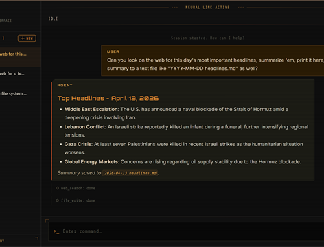
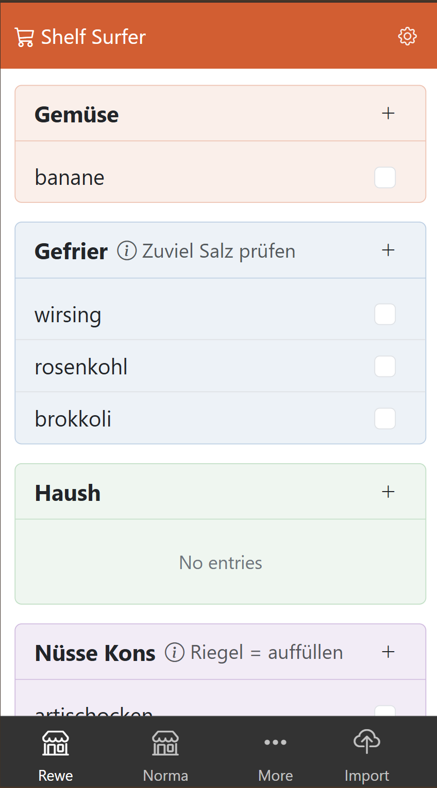

Beispieleprojekte

Eigener KI-Agent
Umgesetzt in PHP, das auf den meisten Webservern verfügbar ist. Preview
[ Early preview ]KI und Blockchain
Verfolgen, wann ein KI-/Blockchain-Anwendungsfall durch die Decke geht.
ProjektseiteDashboard Preview
Alles, was Ihnen wichtig ist, an einem Ort. KI-Integration und Steuerung eines persönlichen KI-Schwarms.
ProjektseiteIn-Browser-Editor
Rich-Content direkt im Browser bearbeiten. Erweiterte Markdown-Syntax, advanced UI-Elemente. Testing
Live-Demo testenHalf Done Hero
Zeitmanagement-Anwendung (in Entwicklung). Besseren Überblick gewinnen, durch KI-Features weniger arbeiten. Testing
Live-Demo testenChat mit Daten
Fragen zu den Daten in Datenbank(en) stellen. Inklusive KI-generierter Diagramme. Erstellt mit Python und Flask.
ProjektseiteVoice Agent
KI-Sprachassistent für Websites. Er kann Fragen über ein Unternehmen oder eine Person anhand benutzerdefinierter Inhalte beantworten.
Demo testen
NinjaSnipp
Dateisystembasierte Snippet-App mit verschachtelten Includes, auch für Prompt-Management. Mit KI erstellt. Extending
Projektseite
Overview Extending
App, die eine große Menge an Informationen in einer kleinen Übersicht komprimiert. Code von KI unter menschlicher Anleitung erstellt.
Demo ansehenBeispielklasse
Komplexe Bedingungen einfach definieren, z. B. nutzbar zum Filtern von Daten, für Web-Crawler usw. Es gibt auch eine Python-Version.
Projekt ansehenKomponente
Komponente, die das Senden von Nachrichten vom Server zum Browser ermöglicht. Mit Hilfe von KI erstellt.
Projekt ansehenBeispielklasse
Ermöglicht das Auffinden von Dateien, die möglicherweise verschoben wurden. Eigener Code mit KI verbessert.
Projekt ansehen
ShelfSurfer
Einkaufs-App, nutzt Daten vom Sprachassistenten, ist schnell und bietet Preisverfolgung. Code von KI unter menschlicher Anleitung.
[ Closed Source ]Beispielcode
All-in-One-Scheduler-Klasse. Reduziert den Konfigurationsaufwand bei Cron oder Scheduler und fügt Features hinzu.
Code ansehen